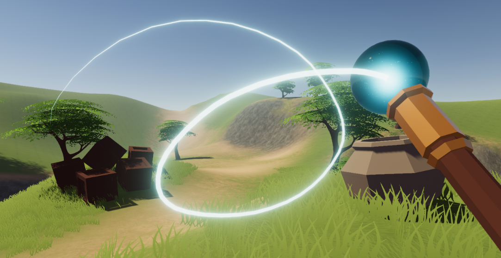
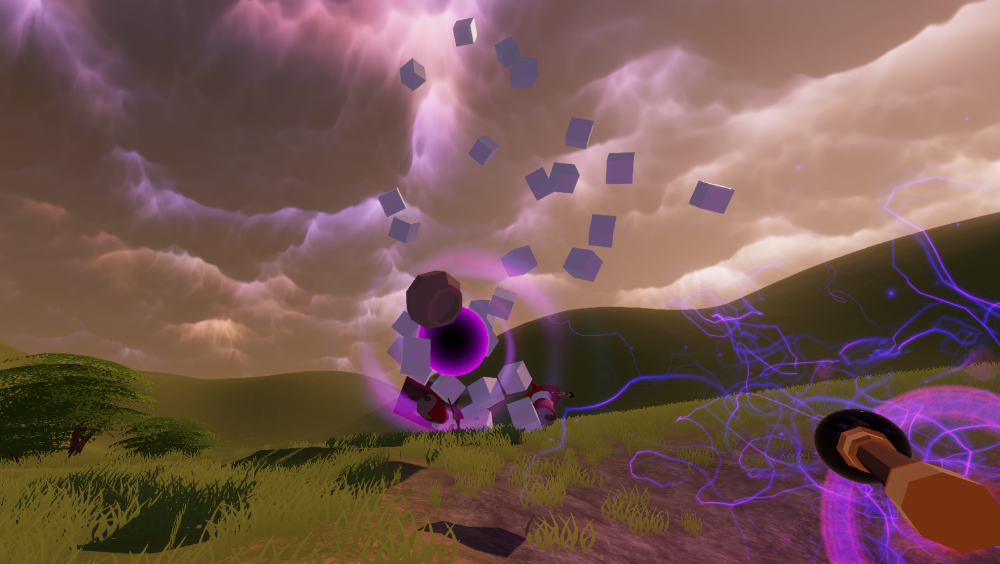
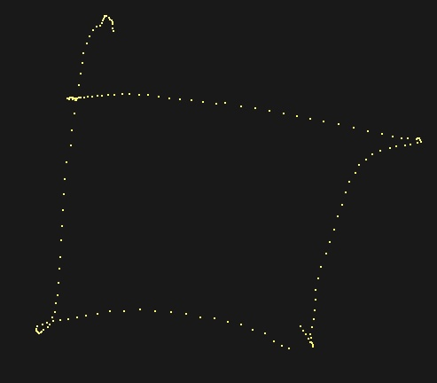
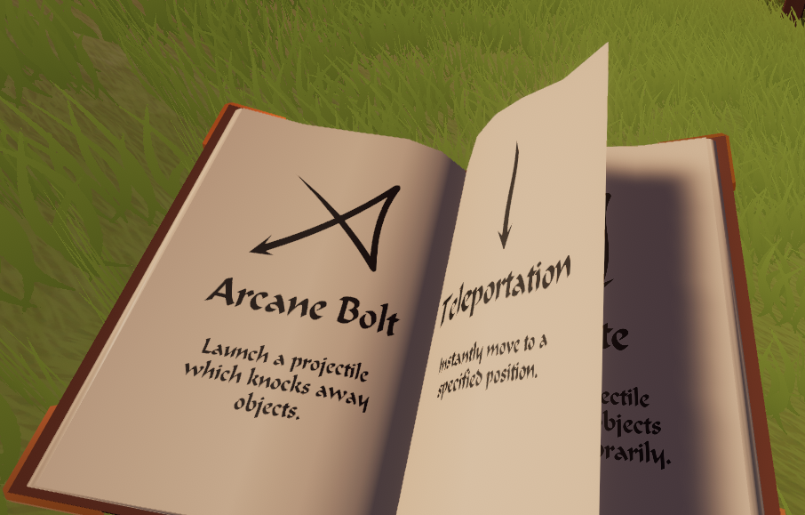

Spell Waves is a project for Advanced Graphics and Interaction 2019 at KTH. It's a fun interactive
VR experience that anyone can play regardless of previous gaming experience. The player uses their
hand controller to draw symbols in free-air which cast different spells. For example, the player can
use spells to teleport themselves, polymorph objects into different shapes or summon a tornado. The
player also has access to a spellbook which automatically writes down any new spells that the player
discovers.

Project Goals
The main goal of this project has been to explore gesture-based VR interaction. We have combined
this with a variety of physics-based spells and added enemies and objects that these can be used
against. As a result, the basic interaction mechanics are fairly intuitive even for players that
have never before used VR. Additionally, we have experimented with different ways of teaching the
player game mechanics by placing small bits of game information in the virtual environment and using
an in-game notebook to help remember any new information.
The project has also provided an excellent context for exploring advanced graphic effects, physics
interaction and video game AI programming. The graphics have been mainly focused on experimenting
with particle systems, post-processing effects, 3D modelling and animation. We have attempted to
implement the spellcasting functionality in a modular and extendable way which means that, from a
developer perspective, it's quite easy to add new spells with a wide variety of effects. Since the
project is open source it could provide a useful starting point for other developers that seek to
extend the game or simply explore our approach to gesture-based VR interaction.

Technologies
To develop this project we have used Unity 3D as our game engine, HTC Vice for VR interaction and
Blender for 3D modelling. Using Unity gave us a good starting point with basic graphics, physics and
interaction functionality working out of the box. This allowed us to focus our efforts on
implementing more project-specific features such as gesture recognition, spell implementations,
visual effects and shaders. The Vive controllers provided excellent functionality for wand
interaction, and the controller trackpad was useful for implementing page-turning for the in-game
spellbook.
The greatest challenge during this project has been implementing the gesture recognition. More
specifically, we constrained the problem to recognizing specific symbols drawn in front of the
viewport. Some significant sources of uncertainty include symbol position, size, drawing speed and
noise - both from the user's imperfect drawing and from the occasionally unstable VR controller
tracking.

We settled for an approach based on converting the world-space coordinates of the symbols into a
more convenient coordinate space and then dividing the transformed points into multiple line
components. While the problem could possibly be solved using machine learning methods, we did not
have time or the necessary data to do this.
Another problem during development was that the team only had limited access to the VR equipment,
which we shared with multiple other course project groups at KTH. We therefore implemented a basic
VR control emulator that allowed us to test most of the features without using mouse and keyboard.
The emulator was limited to testing 2-dimensional gestures, but this didn't matter much for us as we
only implemented quite simple 3-dimensional gestures.
Lessons learned
The emulator was incredibly useful for speeding up the development of most parts of the project. As
such, we regret not implementing it earlier. That said, it's also important to double-check all
features with an actual VR headset as there are subtle differences that may not be apparent until
you try the full game in VR.
We have also significantly advanced our skills in collaborative development. Following suitable
version control policies is vital for minimizing the time spent resolving merge conflicts and fixing
bugs. The project started out quite chaotic in this regard but improved over time.
A final takeaway from this project is that you should always be careful about adding unnecessary
complexity to your game - especially if the user won't have time to explore that complexity. We
designed the game so that the players was slowly introduced to new features by exploring the game
and experimenting. However, at the conventions we needed to constrain each user's demo session to
1-3 minutes to process the queues quicker, while our design was mainly intended for 15-30 minute
demo sessions. We therefore had to skip many of the introductory features during the demos.

Related Work
uWave
uWave: Accelerometer-based Personalized
Gesture Recognition is a gesture recognition algorithm for simple personalized gestures
using an accelerometer, such as a VR controller. While it achieves a high accuracy, the gesture
vocabulary it's tested on is quite small and it requires a large number of gesture samples during
training.
AirSig
AirSig is a personalized VR gesture recognition
library for Unity 3D. We considered using the AirSig library for this project, but chose to
implement the gesture recognition algorithms ourselves to increase our own learning.
PointyStick
PointyStick is a previous course project from
AGI16 which also deals with VR gesture recognition. While thematically similar, PointyStick has
constrained the problem to distinguishing 2 different line gestures, while our project supports a
wider variety.